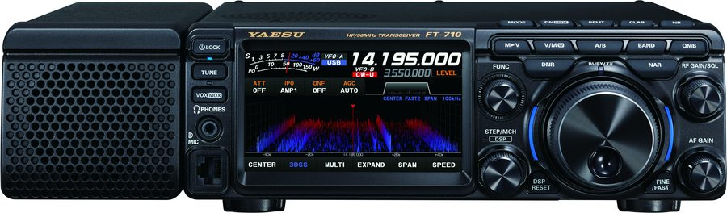

Ham Radio Information
Licensing and current rigs
In 2025, I obtained my Amateur Radio Operator certificate — Basic with Honors — which grants me full HF operating privileges. My current Canadian callsign is VE6GIO. Ham radio has been part of my life for a long time: back in 2003, while living in Guatemala, I was first licensed there as TG9AOO. Getting back on the air after all these years — this time from Alberta — has been incredibly rewarding.
My current shack consists of three radios. For HF operations I run a Yaesu FT-710 AESS, a compact SDR-based transceiver that punches well above its size — I appreciate how capable it is for the bench space it takes up. For 2-meter base station use, I have a Yaesu FT-3185RASP, and as my mobile rig I still rely on my trusty old Yaesu FT-60R — my very first mobile radio, originally purchased back in Guatemala. It has earned its keep over the years and still works flawlessly.

View the ISED certificate information for VE6GIO